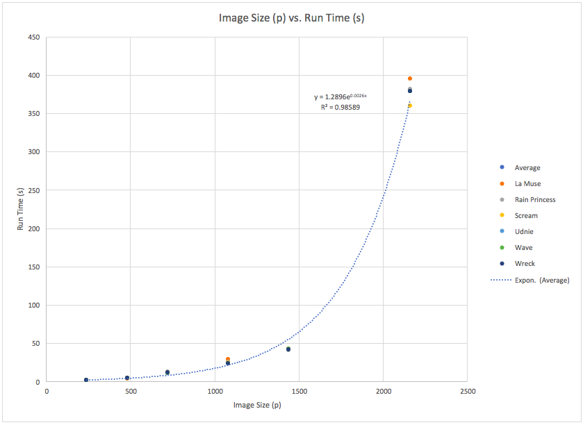
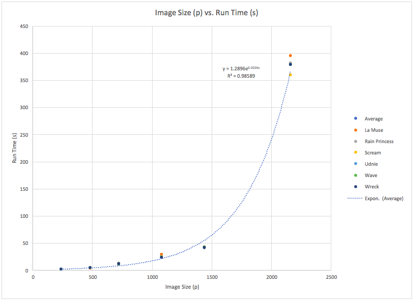
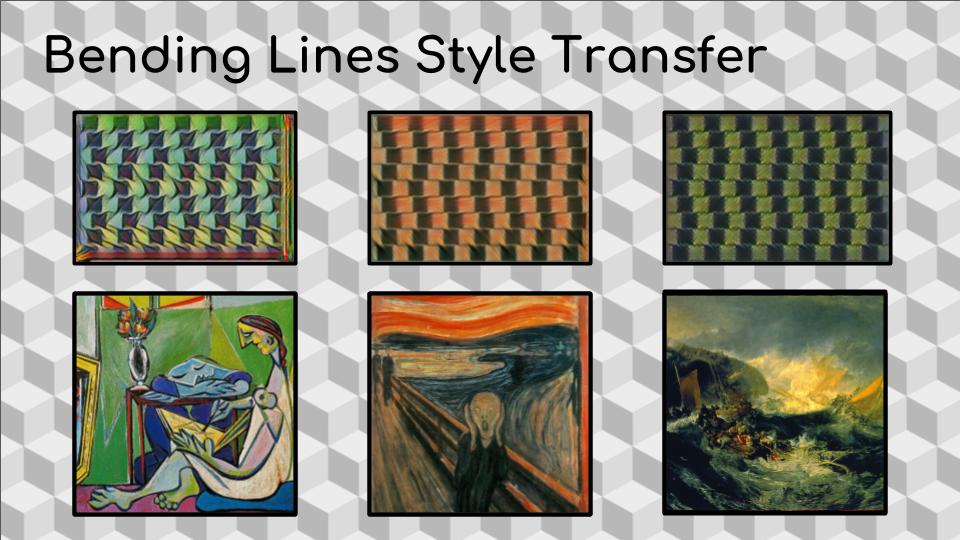
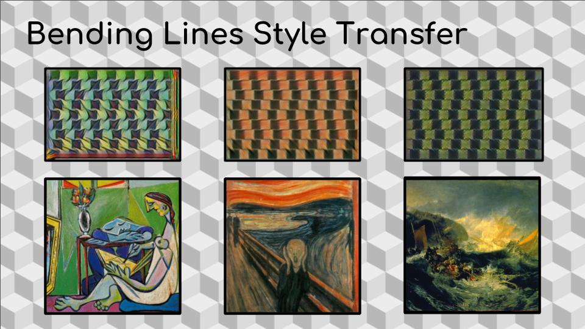

In order to investigate how style transfer affects the operating mechanisms behind optical illusions, we chose 3 still images of optical illusions to apply 6 different styles to (La Muse, Scream, The Shipwreck of the Minotaur, Udnie, Wave, and Rain Princess, respectively. We wrote code to automate this process, and it, along with our other optimizations, areavailable at(
our github repository.)
Additionally, we looked into training a model based upon our first illusion below, where instead of a style being applied to the content of an optical illusion, it would be the style of an optical illusion superimposed onto the content of any image. We hypothesized that imposing the style of an optical illusion where straight lines are made to seem curvy might onto a geometric picture (like many of Piet Mondrian's paintings) might challenge the grid-like structure of the painting. Unfortunately, due to power outages and lack of access to dedicated computer to process this training for 10 or more hours, we were unable to fully train a new model succesfully.
We also looked into implementing masked style transfer like the kind implemented(
here). However, generating masks and using them concurrently with style transfer as a post-processing routine became impractical due to the incompatibility of the two source codes. We couldn't use our generated checkpoint files from our source code to use the styles we wanted along with the Masked Transfer post-processing commands that the linked repository made use of. Additionally, the efficiency of this code at style transfer doesn't touch the speed of our source code (its first pre-processing style transfer iteration, of which there are ten, took just under 30 minutes for a medium-sized 600 by 700 pixel image).


 



 
